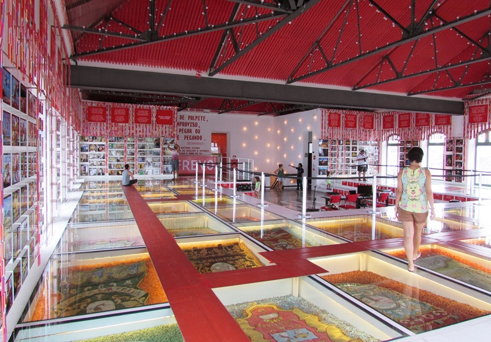

Paço do Frevo
O Paço do Frevo é um espaço dedicado à preservação e celebração do frevo, um ritmo e dança típicos de Pernambuco. Com exposições interativas e apresentações ao vivo, o local é um convite à cultura e à história do estado.

O Paço do Frevo é um dos melhores lugares para conhecer a cultura pernambucana.
Centro de Artesanato de Pernambuco
Localizado próximo ao Marco Zero, o Centro de Artesanato de Pernambuco é um espaço que reúne obras de artesãos de todo o estado. Lá, você pode encontrar peças únicas que refletem a riqueza cultural da região.
O Centro de Artesanato é o lugar ideal para quem busca lembranças e arte local.